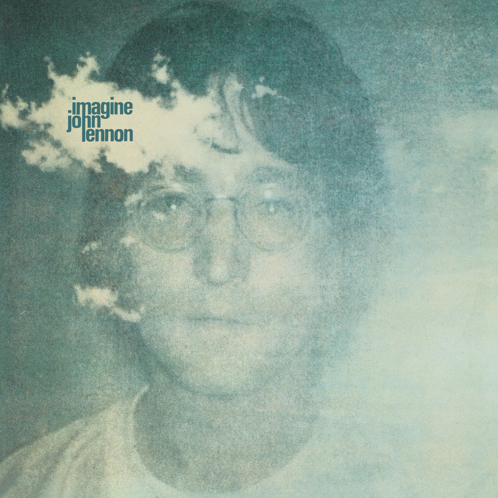

Day 28

John Lennon - Jealous Guy - Imagine - 1968
本来只知道Imagine，结果发现整张专辑都很棒。
I was dreaming of the past
And my heart was beating fast
I began to lose control
I began to lose control
I didn't mean to hurt you
I'm sorry that I made you cry
Oh my I didn't want to hurt you
I'm just a jealous guy
I was feeling insecure
You might not love me anymore
I was shivering inside
I was shivering inside
Oh I didn't mean to hurt you
I'm sorry that I made you cry
Oh my I didn't want to hurt you
I'm just a jealous guy
I didn't mean to hurt you
I'm sorry that I made you cry
Oh my I didn't want to hurt you
I'm just a jealous guy
I was trying to catch your eyes
Thought that you was trying to hide
I was swallowing my pain
I was swallowing my pain
I didn't mean to hurt you
I'm sorry that I made you cry
Oh no I didn't want to hurt you
I'm just a jealous guy
Watch out baby I'm just a jealous guy
Look out baby I'm just a jealous guy